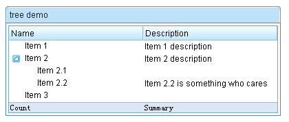

tree
Purpose
A tree consists of tree parts, the set of columns, the set of footers, and the tree body. The set of columns is defined by a number of treecol components, one for each column. Each column will appear as a header at the top of the tree. The second part, The set of footers is defined by a number of treefooter components, one for each column also. Each column will appear as a footer at the bottom of the tree. The third part, the tree body, contains the data to appear in the tree and is created with a treechildren component.Examples
<z:window title="tree demo" border="normal" width="400px">
<z:tree id="tree" rows="5">
<z:treecols sizable="true">
<z:treecol label="Name"/>
<z:treecol label="Description"/>
</z:treecols>
<z:treechildren>
<z:treeitem>
<z:treerow>
<z:treecell label="Item 1"/>
<z:treecell label="Item 1 description"/>
</z:treerow>
</z:treeitem>
<z:treeitem>
<z:treerow>
<z:treecell label="Item 2"/>
<z:treecell label="Item 2 description"/>
</z:treerow>
<z:treechildren>
<z:treeitem>
<z:treerow>
<z:treecell label="Item 2.1"/>
</z:treerow>
</z:treeitem>
<z:treeitem>
<z:treerow>
<z:treecell label="Item 2.2"/>
<z:treecell label="Item 2.2 is something who cares"/>
</z:treerow>
</z:treeitem>
</z:treechildren>
</z:treeitem>
<z:treeitem label="Item 3"/>
</z:treechildren>
<z:treefoot>
<z:treefooter label="Count"/>
<z:treefooter label="Summary"/>
</z:treefoot>
</z:tree>
</z:window>Description
Attributes
mold (optional) - Sets the mold to render this component. see morevflex (optional) - Sets whether to grow and shrink vertical to fit their given space, so called vertial flexibility. Note: this attribute is ignored if setRows(int) is specified see morefixedLayout (optional) - Deprecated. since 5.0.0, use MeshElement.setSizedByContent(boolean)(!fixedLayout) instead Description copied from interface: Tree Sets the outline of grid whether is fixed layout. If true, the outline of grid will be depended on browser. It means, we don't calculate the width of each cell. Otherwise, the outline will count on the content of body. In other words, the outline of grid is like ZK 2.4.1 version that the header's width is only for reference. You can also specify the "fixed-layout" attribute of component in lang-addon.xml directly, it's a top priority. see morepagingPosition (optional) - Sets how to position the paging of tree at the client screen. It is meaningless if the mold is not in "paging". see morepageSize (optional) - Sets the page size, aka., the number items per page. Note: mold is "paging" and no external controller is specified. see moreactivePage (optional) - Sets the active page (starting from 0). see moreinnerWidth (optional) - Sets the inner width of this component. The inner width is the width of the inner table. By default, it is 100%. That is, it is the same as the width of this component. However, it is changed when the user is sizing the column's width. Application developers rarely call this method, unless they want to preserve the widths of sizable columns changed by the user. To preserve the widths, the developer have to store the widths of all columns and the inner width (getInnerWidth()), and then restore them when re-creating this component. see moreautopaging (optional) - Sets whether the auto-paging facility is turned on when mold is "paging". If it is set to true, the setPageSize(int) is ignored; rather, the page size is automatically determined by the height of the Tree dynamically. see morecheckmark (optional) - Sets whether the check mark shall be displayed in front of each item. The check mark is a checkbox if isMultiple() returns true. It is a radio button if isMultiple() returns false. see moreseltype (optional) - Sets the seltype. "single","multiple" is supported. see moremultiple (optional) - Sets whether multiple selections are allowed. see morenonselectableTags (optional) - Sets a list of HTML tag names that shall not cause the tree item being selected if they are clicked. Default: null (it means button, input, textarea and a). If you want to select no matter which tag is clicked, please specify an empty string. see morename (optional) - Sets the name of this component. The name is used only to work with "legacy" Web application that handles user's request by servlets. It works only with HTTP/HTML-based browsers. It doesn't work with other kind of clients. Don't use this method if your application is purely based on ZK's event-driven model. see morerows (optional) - Sets the rows. Note: if both HtmlBasedComponent.setHeight(java.lang.String) is specified with non-empty, setRows(int) is ignored see morespan (optional) - Sets column span hint of this component. String number span indicates how this component distributes remaining empty space to the specified column(1-based). "1" means distribute remaining empty space to the 1st column; "2" means distribute remaining empty space to the 2nd column, etc.. The spanning column will grow to fit the extra remaining space. Special span hint with "true" means span ALL columns proportionally per their original widths while null or "false" means NOT spanning any column. Default: null. That is, NOT span any column. Note span is meaningful only if there is remaining empty space for columns. see morespan (optional) - Sets whether distributes remaining empty space of this component to ALL columns proportionally. Default: false. That is, NOT span any column. Note span is meaningful only if there is remaining empty space for columns. see moresizedByContent (optional) - Sets whether sizing grid/listbox/tree column width by its content; it equals set hflex="min" on each column. Default: false. see morecontext (optional) - Sets the ID of the popup ( Popup) that should appear when the user right-clicks on the element (aka., context menu). An onOpen event is sent to the context menu if it is going to appear. Therefore, developers can manipulate it dynamically (perhaps based on OpenEvent.getReference) by listening to the onOpen event. Note: To simplify the use, it not only searches its ID space, but also all ID spaces in the desktop. It first searches its own ID space, and then the other Id spaces in the same browser window (might have one or multiple desktops). (since 3.0.2) If there are two components with the same ID (of course, in different ID spaces), you can specify the UUID with the following format: uuid(comp_uuid) see morepopup (optional) - Sets the ID of the popup ( Popup) that should appear when the user clicks on the element. An onOpen event is sent to the popup menu if it is going to appear. Therefore, developers can manipulate it dynamically (perhaps based on OpenEvent.getReference) by listening to the onOpen event. Note: To simplify the use, it not only searches its ID space, but also all ID spaces in the desktop. It first searches its own ID space, and then the other Id spaces in the same browser window (might have one or multiple desktops). (since 3.0.2) If there are two components with the same ID (of course, in different ID spaces), you can specify the UUID with the following format: uuid(comp_uuid) (since 3.6.3) the popup can be shown by a position from Popup.open(org.zkoss.zk.ui.Component, String) or the location of x and y, you can specify the following format: id, position id, position=before_start id, x=15, y=20 uuid(comp_uuid), position uuid(comp_uuid), x=15, y=20 see morectrlKeys (optional) - Sets what keystrokes to intercept. The string could be a combination of the following: see moretooltip (optional) - Sets the ID of the popup ( Popup) that should be used as a tooltip window when the mouse hovers over the element for a moment. An onOpen event is sent to the tooltip if it is going to appear. Therefore, developers can manipulate it dynamically (perhaps based on OpenEvent.getReference) by listening to the onOpen event. Note: To simplify the use, it not only searches its ID space, but also all ID spaces in the desktop. It first searches its own ID space, and then the other Id spaces in the same browser window (might have one or multiple desktops). (since 3.0.2) If there are two components with the same ID (of course, in different ID spaces), you can specify the UUID with the following format: uuid(comp_uuid) (since 3.6.3) the tooltip can be shown by a position from Popup.open(org.zkoss.zk.ui.Component, String) or the location of x and y, and can be specified with a delay time (in millisecond), you can specify the following format: id, position id, position=before_start, delay=500 id, x=15, y=20 uuid(comp_uuid2), position uuid(comp_uuid), x=15, y=20 see moreclass (optional) - Sets the CSS class. This method is a bit confused with Java's class, but we provide it for XUL compatibility. The same as setSclass(java.lang.String). see moreleft (optional) - Sets the left position. If you want to specify right, use setStyle(java.lang.String) instead. For example, setStyle("right: 0px"); see moretop (optional) - Sets the top position. If you want to specify bottom, use setStyle(java.lang.String) instead. For example, setStyle("bottom: 0px"); see morezIndex (optional) - Sets the Z index. see morezindex (optional) - Sets the Z index. see moreheight (optional) - Sets the height. If null, the best fit is used. see moretooltiptext (optional) - Sets the text as the tooltip. see morezclass (optional) - Sets the ZK Cascading Style class(es) for this component. It usually depends on the implementation of the mold (@{link #getMold}). see moresclass (optional) - Sets the CSS class. see moredraggable (optional) - Sets "true" or "false" to denote whether a component is draggable, or an identifier of a draggable type of objects. The simplest way to make a component draggable is to set this attribute to true. To disable it, set this to false. If there are several types of draggable objects, you could assign an identifier for each type of draggable object. The identifier could be anything but empty. see moredroppable (optional) - Sets "true" or "false" to denote whether a component is droppable, or a list of identifiers of draggable types of objects that could be droped to this component. The simplest way to make a component droppable is to set this attribute to true. To disable it, set this to false. If there are several types of draggable objects and this component accepts only some of them, you could assign a list of identifiers that this component accepts, separated by comma. For example, if this component accepts dg1 and dg2, then assign "dg1, dg2" to this attribute. see morefocus (optional) - Sets focus to this element. It is same as focus(), but used to allow ZUML to set focus to particular component. <textbox focus="true"/> see morerenderdefer (optional) - Sets the number of milliseconds before rendering this component at the client. Default: -1 (don't wait). This method is useful if you have a sophiscated page that takes long to render at a slow client. You can specify a non-negative value as the render-defer delay such that the other part of the UI can appear earlier. The styling of the render-deferred widget is controlled by a CSS class called z-renderdefer. Notice that it has no effect if the component has been rendered at the client. see morevflex (optional) - Sets vertical flexibility hint of this component. Number flex indicates how this component's container distributes remaining empty space among its children vertically. Flexible component grow and shrink to fit their given space. Flexible components with larger flex values will be made larger than components with lower flex values, at the ratio determined by all flexible components. The actual flex value is not relevant unless there are other flexible components within the same container. Once the default sizes of components in a container are calculated, the remaining space in the container is divided among the flexible components, according to their flex ratios. Specify a flex value of negative value, 0, or "false" has the same effect as leaving the flex attribute out entirely. Specify a flex value of "true" has the same effect as a flex value of 1. Special flex hint, "min", indicates that the minimum space shall be given to this flexible component to enclose all of its children components. That is, the flexible component grow and shrink to fit its children components. see morehflex (optional) - Sets horizontal flex hint of this component. Number flex indicates how this component's container distributes remaining empty space among its children horizontally. Flexible component grow and shrink to fit their given space. Flexible components with larger flex values will be made larger than components with lower flex values, at the ratio determined by all flexible components. The actual flex value is not relevant unless there are other flexible components within the same container. Once the default sizes of components in a container are calculated, the remaining space in the container is divided among the flexible components, according to their flex ratios. Specify a flex value of negative value, 0, or "false" has the same effect as leaving the flex attribute out entirely. Specify a flex value of "true" has the same effect as a flex value of 1. Special flex hint, "min", indicates that the minimum space shall be given to this flexible component to enclose all of its children components. That is, the flexible component grow and shrink to fit its children components. see morewidth (optional) - Sets the width. If null, the best fit is used. see morestyle (optional) - Sets the CSS style. see moreaction (optional) - Sets the client-side action (CSA). Default: null (no CSA at all) The format: action1: action-effect1; action2: action-effect2 Currently, only two actions are show and hide. They are called when the widget is becoming visible (show) and invisible (hide). The action effect (action-effect1) is the name of a method defined in zk.Actions, such as show: slideDown; hide: slideUp You could specify the effects as follows: show: slideDown({duration:1000}) Security Tips: the action is not encoded and it is OK to embed JavaScript, so, if you want to allow users to specify the action, you have to encode it. Note for developers upgraded from ZK 3: CSA's format is different and limited. In additions, it is part of HtmlBasedComponent. see moreid (optional) - Description copied from interface: Component Sets the ID. The scope of uniqueness depends on whether this component is a root component. Refer to Component.getId() for more details. Default: "" (an empty string; it means no ID at all). see morewidgetClass (optional) - Description copied from interface: Component Sets the widget class (aka., the widget type). The widget class is a JavaScript class, including the package name. For example, "zul.wnd.Window". see morestubonly (optional) - Description copied from interface: Component Sets whether this component is stub-only. By stub-only, we mean we don't need to maintain the states of the component at the server side. Default: "inherit" (i.e., the same as the parent's stub-only, and "false" is assumed if none of parents is specified with stub-only). If a component is set to stub-only, the application running at the server shall not access it anymore after renderred to the client. The ZK loader will try to minimize the memory footprint by merging stub-only components and replacing with light-weight components. However, the event listeners and handlers are preserved, so they will be invoked if the corresponding event is received. Since the original component is gone, the event is the more generic format: an instance of Event (rather than MouseEvent or others). If a component is stub-only, the application usually access it only at the client since all widgets are preserved at the client (so are events). This method is available only for ZK EE. see moredefinition (optional) - Description copied from interface: ComponentCtrl Sets the component definition by specifing the name. see morevisible (optional) - Description copied from interface: Component Sets whether this component is visible. see more
ZK Official Reference
Component Reference
Show tree Component ReferenceJava API
Show tree Java API